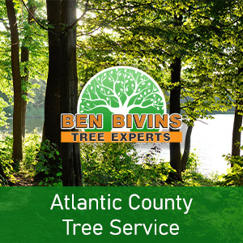

If you need professional tree service in Atlantic County, Ben Bivins Tree Experts should be your first call. Our NJ company has been providing skilled tree services to Atlantic County for years.Hire Only Experienced Professionals for Atlantic County Tree Service
Hiring experienced, licensed, and insured tree experts for tree care is crucial because it ensures the safety and health of both the trees and the people around them. Our experienced professionals possess the knowledge and skills required to correctly assess the health of trees, identify potential risks, and perform necessary maintenance or removal tasks with precision.
Licensed experts adhere to industry standards and regulations. This guarantees that our work meets specific quality and safety guidelines.
Furthermore, insured tree care providers protect homeowners from liability in case of accidents or damage to property during the tree care process.
Our combination of experience, licensure, and insurance provides homeowners with peace of mind. For responsible, professional, efficient, safe Atlantic County tree service, hire Ben Bivins Tree Experts.
Tree Care in Atlantic County is Important for:
- Enhancing Safety: Regular, professional tree care helps identify and mitigate potential hazards, such as weak branches that could fall and cause injury or damage during storms.
- Preserving Tree Health: Professional tree experts diagnose and treat diseases or pest infestations, extending the life of trees and preventing the spread of issues to nearby vegetation.
- Boosting Property Aesthetics: Well-maintained trees enhance the beauty of a property. This contributes to curb appeal and potentially increases your property value.
- Promoting Growth: Proper pruning and maintenance encourage healthy growth patterns, ensuring trees remain vibrant and structurally sound.
- Environmental Benefits: Trees play a crucial role in the ecosystem, providing oxygen, improving air quality, and supporting wildlife habitats.
Our Tree Services in Atlantic County Include:
- Trimming: This service focuses on removing overgrown branches to enhance the tree’s shape and appearance. Regular trimming helps maintain a neat and tidy look, reducing the weight on branches and preventing potential property damage.
- Pruning: The pruning process involves selective removal of parts of a tree, such as branches, buds, or roots. Key benefits include removing hazardous branches, improving tree health and structure, and stimulating or restricting growth according to the tree’s needs.
- Crown Reduction: Reduces the height and/or spread of a tree by trimming branch tips. It is primarily used to reduce stress on specific branches or the whole tree, minimize the risk of storm damage, and keep the tree within its spatial constraints.
- Tree Removal: This is usually used as a last resort. Tree removal in Atlantic County may be necessary when a tree is dead, diseased beyond recovery, posing a safety risk, or obstructing construction. Professional removal is essential for safety and to ensure the tree is removed efficiently without damaging the surrounding area.
If you’re in Atlantic County and need the assistance of professional tree experts, call us, reach out through our social media pages, or message us via the website today. Appointment times vary according to weather, season and our current jobs in progress. Our representative will give you a quote and let you know dates available for service after assessing your particular job.